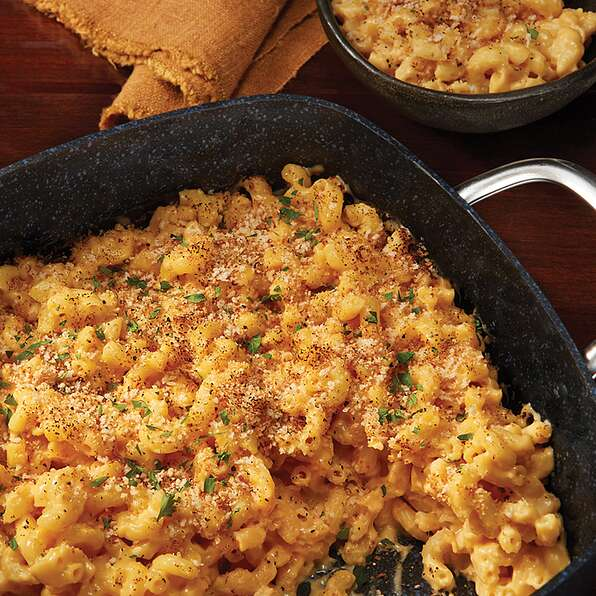

Mac and cheese

Nothing beats the savory delight of mac and cheese. If the world was ending tommrow I deffinatly would stock up on mac and cheese.
Are you sick of crappy microave mac and chesee? After one cooking session you will have a weeks supply of my savory mac and chesee.
you never will go back.
- Large baking tray
- goats foot
- cheese of the gods
- Pasta shells of the lost italians
Steps
- Boil your pasta shells once done add to your baking tray
- Layer the cheese of the gods onto the dish
- waive the goats foot over the pasta for good luck
- bake at 400 degrees for 30 minutes
- Broil the pasta at the end for extra tastiness